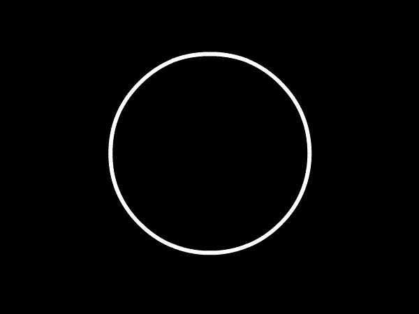
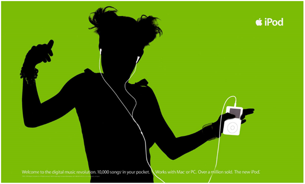

Importance of Contrast
Contrast creates focus
Contrast makes elements stand out and be discernable. Usually the lighter element becomes the focal point.
Contrast creates organization
Differences separate elements in a design, helping create the hierarchy of where the eye should go. Similar things are visually grouped together, therefore different things stand out.

Contrast creates appeal
Contrasting elements make a visual that draws the attention of your audience. Contrast makes other principles more pronounced such as proximity, alignment, and balance.
Types of contrast
- Color Contrast
Drastic differences create high contrast. This also involves value, light and dark. - Size Contrast
Larger elements suggest more importance, smaller suggest less. - Shape Contrast
Physical shapes attract attention if they’re unlike surrounding ones. - Positional Contrast
Placement of elements can group them together or make them stand alone to attract attention.